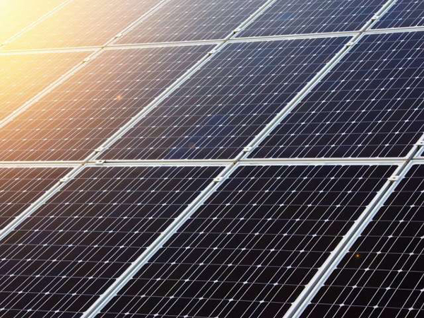

Bereken uw behoefte
Hoeveel zonnepanelen u nodig heeft hangt af van uw jaarlijks verbruik en het type van zonnepanelen dat u wenst. Hieronder kan u berekenen hoeveel zonnepalenen u nodig heeft. Voorwaarde is wel dat u beschikt over een dak dat op het zuiden is gericht, met een afwijking van maximaal 30°. Is de afwijking groter, dan contacteert u ons best om te bekijken of zonnepanelen op uw dak wel rendabel kunnen zijn.